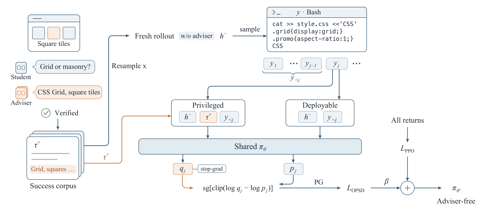
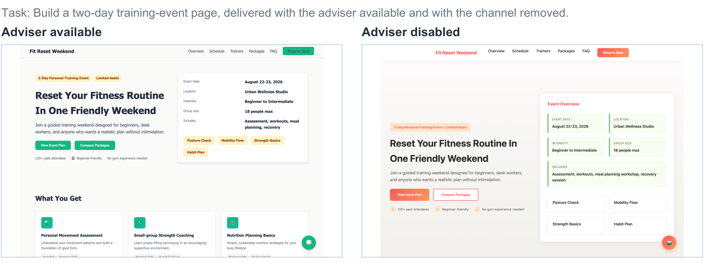

When should it ask,
and what should it say?
In a long task neither the moment of need nor the information worth sharing can be specified in advance. The student has to decide both while it acts.
when+what+free textCommunicative On-Policy Distillation
On-policy distillation needs teacher logits, and black-box models do not expose them. COPD talks to the teacher in plain language instead, and distills the advice the student itself obtained into a policy that no longer needs it.
What makes the asking hard?Studentthe main content area appears mostly empty
TeacherMake content visible by default.
Keptthe successful trajectory, replies included
Recorded Visual task from the paper. See both deliveries ↗
59.8adviser-free average, COPD-4B
2.46×the gain of the strongest black-box OPD baseline
Compare the methodsCommunicative On-Policy Distillation: Distilling Black-Box Teacher Capabilities through Communication for Long-Horizon Tasks
Peking University · JD.com · Sichuan University · Beijing Institute of Technology · Renmin University of China · The Hong Kong University of Science and Technology
The research question
A student can finish a task with a teacher on the line and still fail the same task alone. COPD treats both halves as one problem.
In a long task neither the moment of need nor the information worth sharing can be specified in advance. The student has to decide both while it acts.
when+what+free textFinishing a task with help does not mean the student can repeat it unaided. The advice has to end up inside the policy, not beside it.
success with help→success aloneThe adviser only returns text, so no logits are needed. Because the student asks on its own, the exchange is also usable as on-policy supervision for what the student actually tried.
COPD · the method
One policy decides when to talk and what to do. Successful consulted trajectories come back as privileged context for the student's own new responses.
During training the student may spend a step on a request instead of an environment action.
a_t ∈ A_env ∪ A_comm
u_t ~ π_θ(· | h_t)Only trajectories that pass the native task check and actually used the adviser enter the reference corpus.
Two views of the same weights score a fresh adviser-free prefix; only the privileged view sees the successful trajectory.
No teacher logits. The adviser answers in text and never acts in the environment, so the method applies to any chat-only black-box model.
No separate asker. Communication and task behaviour share one parameter set, trained from the same environment return.

The result
Every policy is scored with adviser access disabled on the same 128-task panels. CAMP-I is the task-reward reference; ActionOPD is the strongest black-box OPD baseline.
| Policy | Shop | Coding | AutoResearch | General | Visual | Avg. |
|---|---|---|---|---|---|---|
| Frozen Qwen3.5-4B | 77.3 | 27.3 | 46.1 | 39.8 | 36.0 | 45.3 |
| CAMP-I | 85.2 | 32.0 | 38.3 | 68.8 | 46.5 | 54.2 |
| ActionOPD | 93.0 | 24.2 | 41.4 | 58.6 | 40.0 | 51.2 |
| ROPD | 73.4 | 27.3 | 43.0 | 63.3 | 40.8 | 49.6 |
| OmniOPD | 80.5 | 25.8 | 43.0 | 55.5 | 40.8 | 49.1 |
| GAD (w/ warm-up) | 85.2 | 22.7 | 39.8 | 57.8 | 39.0 | 48.9 |
| OLIVE | 79.7 | 24.2 | 39.8 | 53.1 | 39.0 | 47.2 |
| COPD-4B | 92.2 | 36.7 | 55.5 | 66.4 | 48.2 | 59.8 |
| COPD-9B | 93.0 | 38.3 | 57.0 | 68.8 | 49.4 | 61.3 |
| Teacher (direct) | 100.0 | 78.1 | 83.6 | 91.4 | 50.4 | 80.7 |
Against CAMP-I, the largest gain is AutoResearch (+17.2) and the largest loss is Shop (−0.8 against ActionOPD).
CAMP-I COPD-4B Visual is a judged grade, not a binary success rate.
Understanding the result
Three checks separate the pieces: access to the adviser, the content of its replies, and the components of the update.
Access is worth 1.6 points to COPD-4B, 9.8 to the untrained student and 14.9 to the variant trained without the update.
Deleting the replies costs 2.9 points; moving them to another task costs 5.2.
Removing the distillation update costs the most. Neither the communication channel alone nor imitation of the same trajectories recovers the full recipe.
A recorded consultation
A Visual task asks for a two-day training-event page. The trained policy delivers it once with an adviser mounted and advertised, and once with the channel removed.
The two pages differ in detail and agree in structure: the behaviour the consultation established does not depend on reaching an adviser at test time.

Beyond the training suite
Evaluated without an adviser on Terminal-Bench 2.1 and SWE-Bench Pro V2. The 9B policy closes to within 0.3 points of a larger same-generation model on the two-suite average.
Larger same-generation reference: Qwen3.5-35B-A3B at 33.8.
Larger same-generation reference: Qwen3.5-35B-A3B at 27.4.
Paper & citation
COPD makes the student's own consultation the unit of distillation, so a chat-only teacher is enough.
@article{luo2026copd,
title = {Communicative On-Policy Distillation: Distilling Black-Box Teacher Capabilities through Communication for Long-Horizon Tasks},
author = {Lirui Luo and Kelong Mao and Xinwei Yang and Rongqing Li and Luyu Chen and Kevin Wong and Yudong Guo and Xinrui Wang and Jiayin Zhu and Gu Simiu and Sulong Xu and Cong Fang},
year = {2026}
}